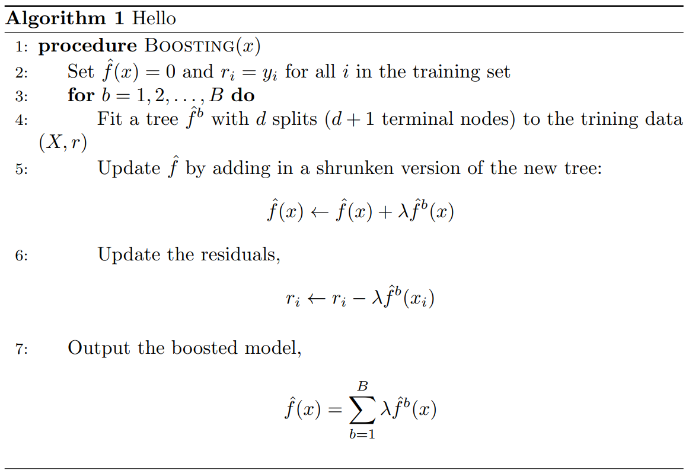
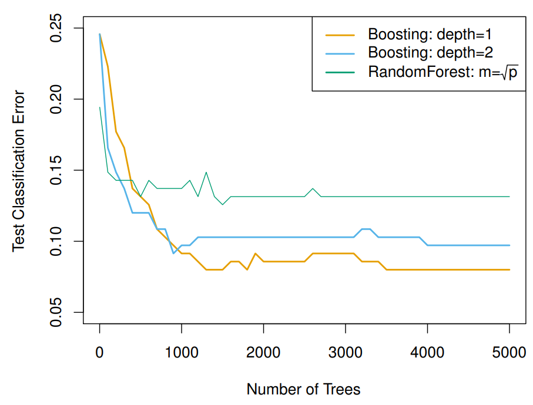

{% include mathjax.html %}
Extensions to Tree-methods
Bagging
As mentioned in the previous article, tree-methods suffer from high variance. In statistics, we
know that averaging a set of observations reduces variance. Bagging leverages
this fact by generating ‘additional’ datasets using bootstrapping and fitting an
unpruned tree to each. Therefore, if we use bootstrapping to obtain B training
datasets and define \(\hat{f}^{*b}(x)\) to be the tree fitted to dataset \(b \in B\), then our
bagging estimate for a test case x will be the average over all estimates from all trees,
$$
\begin{align*}
\hat{f}_{bag}(x) = \frac{1}{B} \sum_{b=1}^B \hat{f}^{*b}(x)
\end{align*}
$$
Random Forests
A drawback of Bagging lies in the fact that each of the B trees are correlated.
This is because often certain predictors are very effective, so splits across trees
inevitably use the same predictor; this makes trees not completely independent.
Random Forests decorrelate trees by only considering a random fraction of predictors at each split (typically \(\sqrt{p}\) where p is the total number of predictors).
Boosting
Boosting takes on a different flavor than Bagging and Random Forests. Rather
than fit multiple trees on bootstrapped datasets, Boosting instead learns ‘slowly’
in an additive fashion. Specifically, given the current model, we fit a decision
tree to the residuals. This way, each individual tree can be said to tackle a
different part of the problem. Since each tree is not targeting the same thing,
they are not correlated. Boosting uses hyperparameters \(\lambda\), which controls the
amount of contribution each individual tree has in the final prediction, and an
integer value denoting the depth for each decision tree. See Algorithm 1 for a
description.

Random Forest vs. Boosting
We compare the performances of Random Forests and Boosting in Figure 4. In this application, Boosting with depth=1,2 outperform Random Forests.
